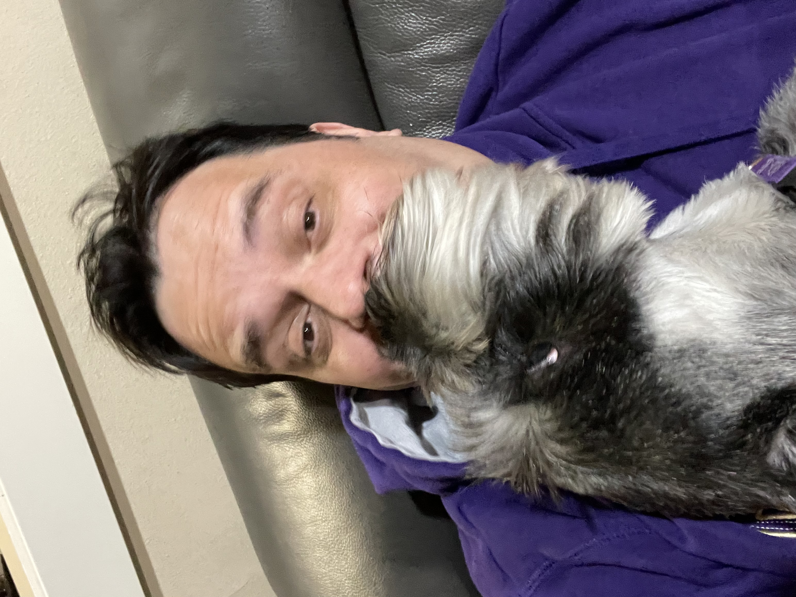

My review of the Farmer’s Dog food service
I recently subscribed to the Farmer’s Dog. I love it, even though I didn’t expect to.
The problem
My dog, Gypsy Danger, is a standard schnauzer. She is very picky with her food, and would do very long hunger strikes to prove her point. She doesn’t like dry food, and we have been feeding her wet food for a while. Even so, she resists: if she sees us eating human food, she will want to participate. To address that, we needed to feed her before we start cooking for ourselves, or she’ll “protest”.

Freakonomics on Venture Capital
One day, I was listening to a Freakonomics podcast on venture capital. In that episode, they interviewed Jonathan Regev, the founder of the Farmer’s Dog who talked about how hard it would have been for their company to scale without venture capital. I was, at that very moment, about to feed my dog, and decided to give it a try.
The experience
Signing Up
Signing up to the Farmer’s Dog was, as expected from something backed by VC, very easy. I had to answer a (cute) questionnaire asking about my dog, her weight and her food preferences. The result was a recommended food plan with a calculated number of calories, and a discounted price for a few weeks (I don’t remember if it was two or three).
What I didn’t like
The first thing I didn’t like was that the number of calories was on the low side. Using another web calculator, I found that my dog would need 946kcal/day. The Farmer’s Dog calculator gave me less than 500kcal/day, about half of what I thought I needed, and about half of what I was currently feeding her.
The second thing was the price: after removing the initial discount, the price was about the same of the food I was currently using… but for half the calories.
The next thing was my own fault: I was counting on using the food right away, but it arrives deeply frozen, and I needed to wait about 36h for it to unfreeze. The package was a little unwieldly: the food comes as a paste in sealed plastic bag. I needed to use scissors to cut the top of the package and press out the paste into the bowl. It is hard to measure the exact quantity, and my hands got dirty. After some practice, I can now squeeze the food out without getting my hands dirty, but measuring is still tricky.
The food needs to be frozen, defrosted and kept refrigerated. That makes it inconvenient to use it in travel,
Did I hate it? For the first few days I thought I would, but…
What I liked
The Farmer’s Dog excels where it matters: the dog eats the food like there’s no tomorrow. I wouldn’t even need to clean the bowl. The only other case when I see she eating like that when she’s eating human food. Being a careful scientist, I thought this could be because she was hungry due to the lower calories, but I tested that she devours the food even after getting a lot of calories from other foods in prior meals. She really likes the food. I think it’s a staple of VC investments that they want to sell solutions rather than products, and this solved my main problem.
The downside: I had to adjust the calorie count up, which meant that the Farmer’s Dog is now more expensive than my previous food.
My verdict
My final verdict: I think it’s wortwhile giving it a try.
Posts on this blog are not sponsored. Regardless, links to products or services that might compensate have the #ad tag